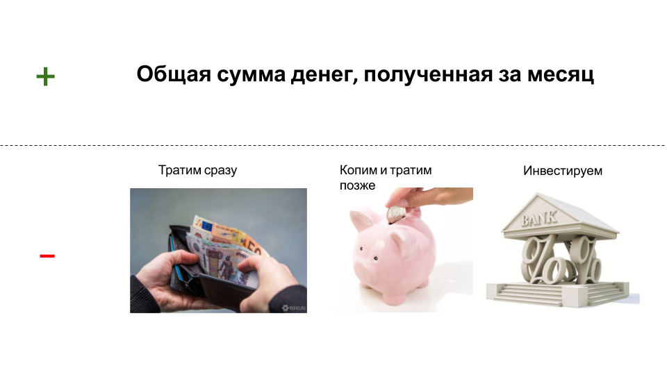

Ключевым выбором, стоящим перед человеком с деньгами, является
выбор между сбережениями и тратами. Траты могут быть как на
определенный продукт (к примеру, цветы на 8 марта), так и с целью
получения большего количества денег в будущем, то есть инвестиции.
Необходимо поддерживать баланс между доходами (зарплата, деньги в
подарок, продажа своих вещей) и тратами (плата за квартиру,
покупка еды, одежды и др.)

Вы можете использовать схему, представленную выше, для
планирования финансов в примерах, представленных далее. Помните:
полученные деньги должны быть полностью разбиты на 3 части. Сумма
трех частей не может превышать доходы.
Пример 1:
Дмитрий после вычета налогов заработал за февраль 50 000 рублей,
а также 10 процентов от зарплаты в качестве поощрения за
сверхурочные часы. Ему нужно отдать долг в размере 10 000 рублей,
открыть депозит в банке на 2000 рублей, оплатить счета за квартиру
– 8 000 рублей, за машину - 5000 рублей, и купить еду и одежду –
20 000 рублей. Дмитрий копит на новый ноутбук, так как старый
слишком нагревается. За год он должен накопить 96 тысяч,
откладывая одинаковую сумму каждый месяц. Учитывая, что
неуказанных затрат нет, укажите, сколько может составить его
максимальный чек в ресторане, куда он идет с друзьями в первый
день марта.
Пример 2:
Виктор решил инвестировать в крупную компанию. Получив на работе
300 000 рублей в конце января, он решил 20 процентов из них
вложить с расчетом получить прибыль в конце года. Также ему
необходимо купить подарок отцу на 23 февраля за 5000 рублей,
заплатить за аренду квартиры 100 000 рублей, а также налог – 39
000 рублей. Остальные расходы за месяц составили 60 000 рублей.
Виктор копит на телевизор. Он рассчитывает купить его на деньги,
отложенные за январь и февраль. Сколько может стоить телевизор,
если Виктор откладывает одинаковую сумму и в январе, и в феврале?
Подумайте, что выгоднее: прямо сейчас потратить 2000 рублей на
велосипед или положить их в банк, где каждый год на вашем счете
становится больше денег (см. сложные проценты), а затем купить
более хороший? Рассмотрите случай, когда вам нужен велосипед
срочно, и когда срочности нет.
Зачастую приходится терять деньги из-за срочности – мы как бы
тратим деньги на дополнительное время пользования товаром.
Рассматривать вклады в банк и другие инвестиции имеет смысл только
с расчетом на период, превышающий полгода.